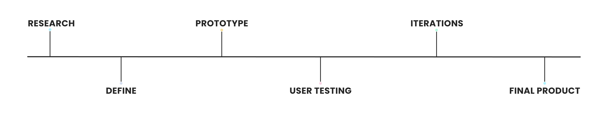

- UX/UI |
- Brand Design |
- About
Trippn Case Study

This app was designed with the user in mind. When users are booking travel, they a one stop shop to book their flights, hotels, cars, and activities. My partner and I did extensive research to understand the user so we could create an app that will fulfill the users wants and needs.
Tools
Lindsay Trump
UX/UI Researcher & Designer
Process
Research
During our research, we interviewed 6 people and surveyed 14. We found that most users tested were the planners of the trips they would go on, but felt that it was frustrating they had to use multiple tools and sites to book their trips and activities. One thing they were looking for specifically is an app that can track their budget. We want to incorporate a tool where you can enter your exact budget to filter out flights, hotels, cars, and actives that fit within your budget.
Define
We believe that by creating a all-in-one booking and budgeting app for on the go, unorganized people will achieve a smooth and successful experience all around.
Our app was designed to achieve booking your whole trip on one place and being able to track your budget for that trip. We have observed that our product or service isn’t meeting the budgeting needs, which is causing a lack of trust in our business. How might we improve our budget section so that our customers are successful with tracking and staying within their budget?

Ideation
After we were able to define what our main problem was, we moved onto the ideation phase. We took all of our data from the user interviews and surveys and compiled it into an affinity diagram. During the affinity diagram we were able to see the main pain points and put that into a priority matrix. The priority matriculates really let us see what we should focus on and what we can work on at a later time. It’s important to remember that all ideas are important to the use, its just putting a priority to the ideas.
Prototype
After the ideation phase, my partner and I split off to come up with our own designs. Now that I was on my own, I wanted to really focus on all the pain points the customers had. I decided to have the budget section separate from the book travel section in the case that the user wanted to book travel without entering a budget. I also wanted to make sure I focused on the activities page but I struggled with the best way to showcase this. With that being said, I got something down to test and went on to do some user testing.
User Testing
User testing always ends up to be my favorite phase since I get such amazing and helpful feedback. During these users tests I found that my user flow lacked a concise direction and confusing information. Getting this feedback helped me take a step back and figure out what I was missing. Since this was my first app design, I was missing a couple basic icons and I was trying to change buttons and styles that aren’t broken. The biggest take away I got from the user feedback was traditional element works and to not change it.

Final
After applying the changes from the user feedback, I landed on a version that I was happy with and submitted it for homework. Since this was my first project, I wanted to revisit after a couple months and decided it needed more iterating. I ended up changing the font and splash screens to be less wordy and more visual and decided to add more detail and pictures to the travel pages. I also wanted to revamp the user profile since it was very simple and Apple forward. I think the final version has more personality and a better user flow and will allow the users to dive into the app and get their one-stop-shop.
Conclusion
When I was originally working on this project I wanted to mainly focus on the budget portion of the app but I quickly realized that my focus needed to expand. I enjoyed this app design because I was truly able to learn so much about research and design. I also found that while I got a lot of data, I could make my interview questions and survey questions more to the point. I could have used a little more data but my user testing portion really helped hone in on my design. It also helped taking a step back and having fresh eyes and revisiting the design. I still have a couple more tweaks that need to be made but I am proud of how far I’ve come.